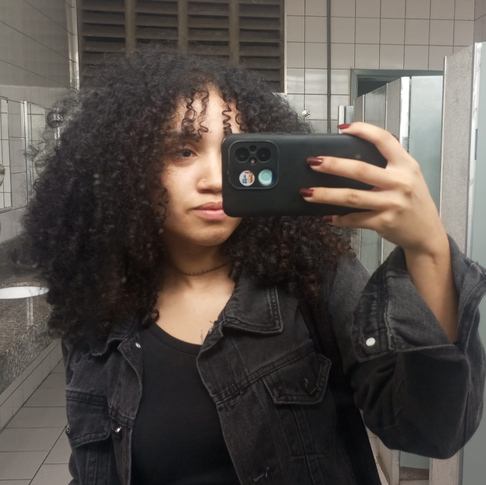

Sobre mim

Sou a Maria Samyla, estudo Desenvolvimento de Software Multiplataforma na FATEC. Comecei a programar no curso e desde então não parei, já fiz páginas web, projetos em sala e estou sempre tentando aprender mais.
Gosto de colocar a mão na massa, trabalhar em equipe e ver o resultado funcionando. Estou em busca da minha primeira oportunidade na área de tecnologia.